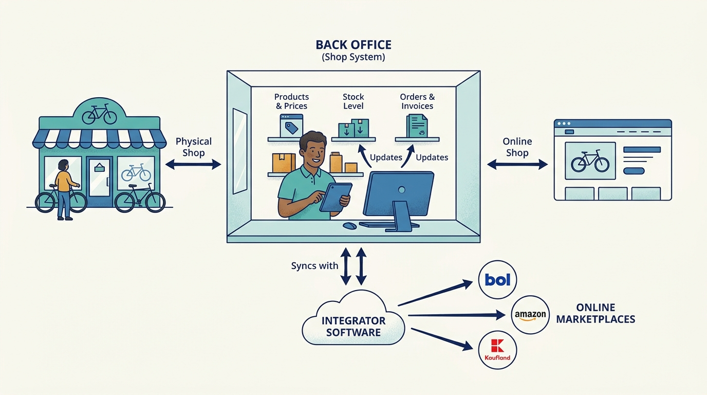
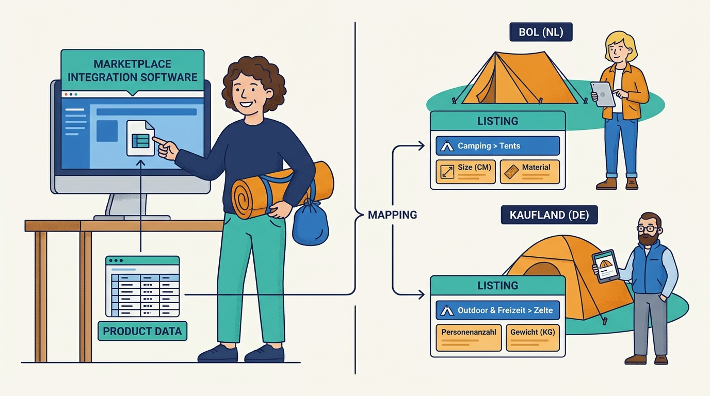
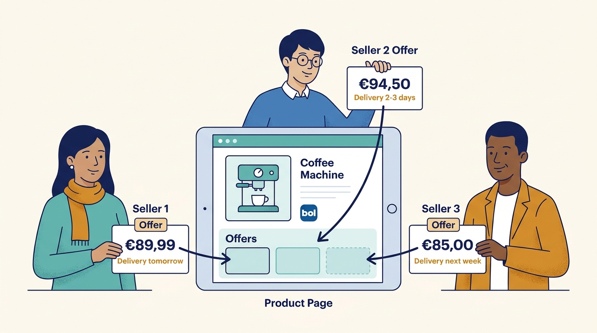
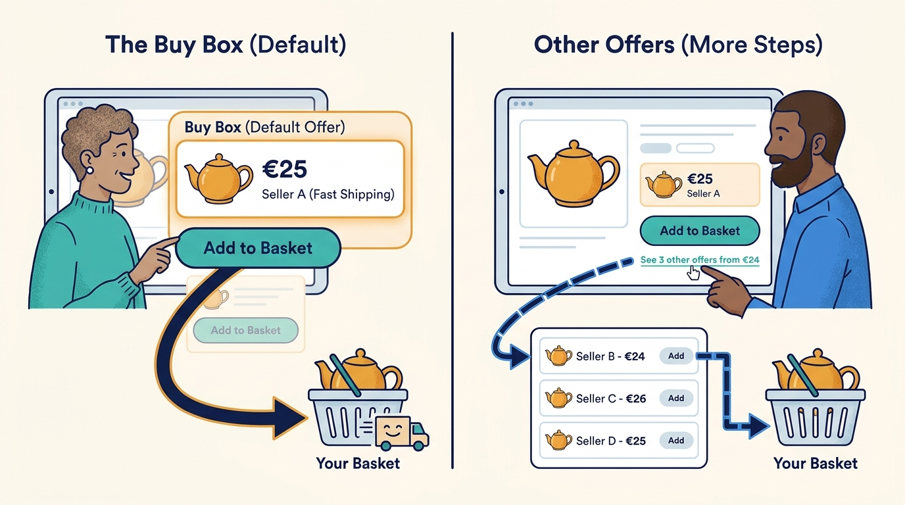
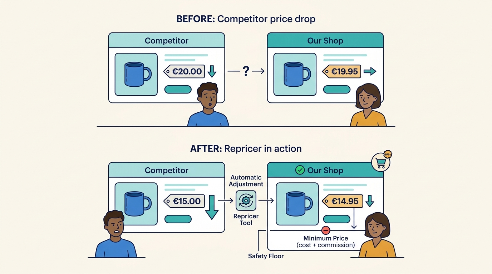
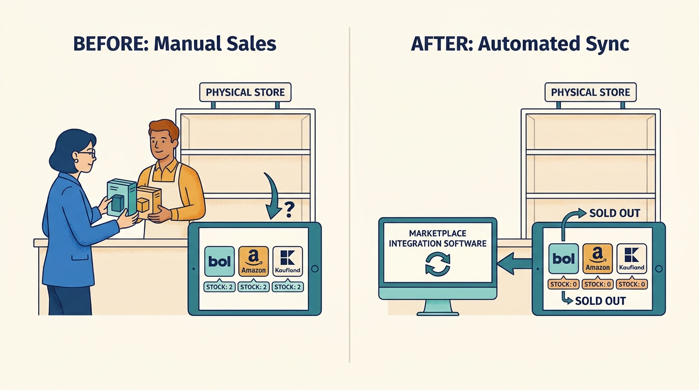
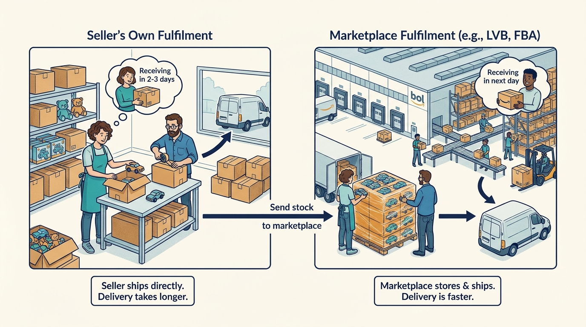
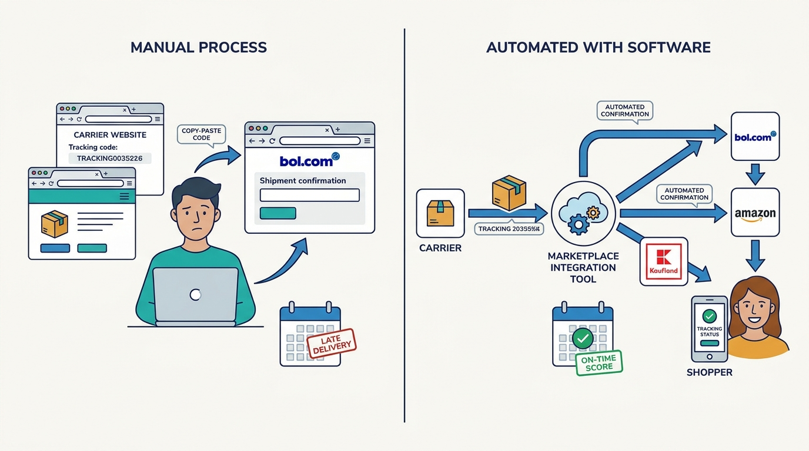

The merchant (shop owner)
Sells products through its own webshop and on marketplaces, and pays for the integration software.
What matters to them
Profitable extra sales without hiring more staff, and never being penalised by a marketplace.
A beginner's guide
Who this is for
A curious adult coming from a different field, with no assumed industry knowledge.
What this guide covers
This introduction explains marketplace integration software: the tools that let a shop sell the same products on several online marketplaces (such as bol, Amazon or Kaufland) without doing the work by hand for each one. It focuses on European, especially Dutch and Belgian, merchants. It leaves out how to run a webshop, warehouse operations in depth, and online advertising beyond a short mention.
01
Explain why a shop that already has a webshop would also sell on marketplaces, and why that creates extra work.
Describe what a marketplace integrator does between the shop's own systems and each marketplace.
Distinguish a product, a listing and an offer, and explain what the buy box is.
Follow one order from a marketplace to the customer's door and back to the marketplace as a shipment confirmation.
Name the main trade-offs: speed versus accuracy, price competition versus margin, and fixed fees versus a share of revenue.
02
An online marketplace is a website where many independent sellers offer products to shoppers, and the website takes a commission on each sale. In the Netherlands and Belgium the biggest is bol; Amazon, Kaufland, Decathlon and MediaMarkt run similar marketplaces across Europe.
A shop that wants to sell on these marketplaces has to put its products there, keep prices and stock up to date, collect the orders, and tell the marketplace when each parcel has shipped. Each marketplace has its own rules and its own technical connection. Marketplace integration software sits in the middle: the shop connects its own systems once, and the integrator talks to every marketplace on its behalf.
Marketplaces bring shoppers a small shop could never reach alone, but every extra marketplace multiplies the admin. Without automation, staff retype orders, update stock in several places and fix rejected product pages. Mistakes are punished: a marketplace can lower a seller's visibility or suspend it if it cancels too many orders because the product was not actually in stock.
03
Sells products through its own webshop and on marketplaces, and pays for the integration software.
What matters to them
Profitable extra sales without hiring more staff, and never being penalised by a marketplace.
Employee who decides which products go to which marketplace, writes and fixes product pages, and sets prices.
What matters to them
Getting products accepted quickly and staying competitive without selling at a loss.
Pick, pack and ship orders, and keep stock figures correct.
What matters to them
Orders arriving in the system they already use and stock that is right on every channel.
Runs the shopping website, sets the rules for listings, delivery promises and seller performance, and takes a commission.
What matters to them
Reliable sellers, accurate product information and happy shoppers.
Provides the software and often the setup help that connects the merchant to many marketplaces.
What matters to them
Stable connections, satisfied merchants who stay and grow, and keeping up with every marketplace change.
Manufacturers that sell through shops and sometimes directly on marketplaces, and pay marketplaces for advertising.
What matters to them
Consistent product information and prices, and knowing which advertising pays back.
Warehouse, shipping or back-office software makers whose customers also sell on marketplaces.
What matters to them
Offering marketplace connections inside their own product without building them all themselves.
04
The shop's internal system for products, stock, orders and invoices. It may be part of the webshop software or a separate business system.

The integrator connects to the back office so that marketplace sales come from the same truth as the webshop and the physical store.
Click the image to open it in a new tab.For example
A bicycle shop keeps all its products, prices and stock in its back office and its webshop reads from it.
Why it matters
The integrator connects to the back office so that marketplace sales come from the same truth as the webshop and the physical store.
A product's page on a particular marketplace, built from the product data and filled in according to that marketplace's rules.

Most listing rejections come from missing or wrongly formatted details. Mapping product data to each marketplace's categories and required fields is a large part of the work.
Click the image to open it in a new tab.For example
The same tent has a Dutch listing on bol under 'Camping > Tents' and a German listing on Kaufland under a different category with different required fields.
Why it matters
Most listing rejections come from missing or wrongly formatted details. Mapping product data to each marketplace's categories and required fields is a large part of the work.
One seller's price, stock and delivery promise for a product on a marketplace. Several sellers can make offers for the same product.

The product page is shared, but sellers compete through their offers.
Click the image to open it in a new tab.For example
Three shops offer the same coffee machine on bol, each with a different price and delivery time.
Why it matters
The product page is shared, but sellers compete through their offers.
The default offer the marketplace shows next to the 'add to basket' button when several sellers offer the same product. bol calls it the 'koopblok'.

Most sales go to the buy box holder, so sellers adjust prices to win it. Integrators claim a very large share of sales goes through it; the exact share differs per marketplace and is rarely published by marketplaces.
Click the image to open it in a new tab.For example
A shopper clicks 'add to basket' and automatically buys from the seller who holds the buy box, without looking at other offers.
Why it matters
Most sales go to the buy box holder, so sellers adjust prices to win it. Integrators claim a very large share of sales goes through it; the exact share differs per marketplace and is rarely published by marketplaces.
Software that changes an offer's price automatically according to rules, competitors' prices and a minimum and maximum price.

It saves manual work and wins sales, but a careless rule can start a price war or sell at a loss.
Click the image to open it in a new tab.For example
When a competitor drops its price, the repricer lowers ours by a few cents, but never below the price that still covers cost and commission.
Why it matters
It saves manual work and wins sales, but a careless rule can start a price war or sell at a loss.
Keeping the quantity a marketplace thinks is available equal to what the shop can really ship.

Selling something that is not there forces a cancellation, which marketplaces penalise.
Click the image to open it in a new tab.For example
The last two units sell in the physical store; within minutes all marketplaces must show zero.
Why it matters
Selling something that is not there forces a cancellation, which marketplaces penalise.
A service where the marketplace stores the seller's products in its own warehouse and ships them. bol calls it LVB (Logistiek via bol); Amazon calls it FBA (Fulfilment by Amazon).

It improves delivery promises but splits stock between locations, so the seller must decide when to ship from its own warehouse and when to replenish the marketplace's.
Click the image to open it in a new tab.For example
A toy shop sends 200 units of its best seller to the bol warehouse before December so bol can deliver them the next day.
Why it matters
It improves delivery promises but splits stock between locations, so the seller must decide when to ship from its own warehouse and when to replenish the marketplace's.
The message telling the marketplace that an order has shipped, with the carrier and tracking code.

Late or missing confirmations count as late deliveries in the seller's performance scores.
Click the image to open it in a new tab.For example
After the parcel is handed to the carrier, the tracking code is sent to bol so the shopper can follow it.
Why it matters
Late or missing confirmations count as late deliveries in the seller's performance scores.
05
Dates below are taken from company sources; the general development is common to many European countries.
bol opened its website to third-party sellers, and integrators appeared to connect webshops to it. EffectConnect says it has built marketplace integrations since 2012, and bol lists it as the first integrator that connected webshops to bol, in 2011.
What this helps explain
Dutch and Belgian shops gained a large new sales channel, and integration became a business of its own.
Amazon and other marketplaces expanded across European countries, and marketplaces such as Kaufland, Decathlon and MediaMarkt opened to outside sellers.
What this helps explain
Selling in several countries became possible for small shops, but each marketplace brought its own rules, languages and connections.
Dutch integrators began to consolidate; ChannelEngine acquired Vendiro, another integrator based in Leiden.
What this helps explain
Merchants re-evaluate their integrator after such deals, and fewer, larger players compete on channel count and price models.
EffectConnect became part of Katapull, a Dutch group combining back-office, point-of-sale, shipping, EDI, returns and (from October 2026) warehouse software brands into one 'Commerce Hub'.
What this helps explain
Integration is moving from a stand-alone tool to one part of a connected chain of business software.
06
Illustrative example with invented people and numbers. Sanne runs a Dutch sports shop with a webshop and a back office. She already sells on bol through an integrator and now wants to sell on Amazon in Germany. Mark manages the marketplaces; Ali runs the warehouse.
Sanne's back office is already connected to the integrator, so adding Amazon means granting the integrator access to her new Amazon seller account and choosing settings such as countries and shipping methods.
Why this step matters
Because the shop's systems talk only to the integrator, a new marketplace does not need a new technical project.
Mark selects 300 fitness products. The integrator shows which German categories and required fields apply. Rules fill in titles and details automatically, and German texts are translated from the Dutch content.
Why this step matters
Listings that miss required fields are rejected, so mapping and checking before sending saves days of rework.
Mark sets a price formula: purchase cost plus Amazon's commission plus shipping plus margin, converted where needed. The repricer may lower the price to win the buy box, but never below that floor.
Why this step matters
Winning sales at a loss is worse than not selling.
A shopper in Cologne orders a kettlebell. The integrator collects the order from Amazon, converts it to the same format as webshop orders and sends it to the back office, where Ali sees it in his normal picking list.
Why this step matters
Nobody has to retype the order, and the warehouse works the same way regardless of where the order came from.
The kettlebell was the last one. The back office lowers the stock to zero, and the integrator pushes zero to bol, Amazon and the webshop within minutes.
Why this step matters
If bol still showed one unit, a second shopper could buy it and the shop would have to cancel.
Ali hands the parcel to the carrier. The tracking code flows back through the integrator to Amazon, which shows it to the shopper.
Why this step matters
Amazon measures on-time shipment confirmation; doing it automatically protects the shop's seller rating.
Sanne reviews revenue, buy box share and margin after fees per marketplace with her integrator's consultant and decides whether to add France next.
Why this step matters
Some marketplaces bring revenue but little margin; channel decisions should be made on profit, not volume.
The outcome
Sanne sells in a new country without extra staff, Mark manages content and prices by rules rather than one by one, and Ali ships Amazon orders like any other order. Success for everyone means more profitable sales with no penalties.
07
Merchants pay a subscription to the integrator and a commission to each marketplace. They gain shoppers they could not reach alone, but only if margin after commission, shipping and software stays positive.
For example
EffectConnect publishes an entry plan from EUR 305 per month for 1,000 products, 500 orders and one marketplace, with add-ons for more marketplaces or modules.
Some integrators charge a percentage of the revenue they carry; others charge a fixed fee. A percentage aligns the integrator with growth but becomes expensive for successful or high-value sellers; a fixed fee is predictable but the integrator must earn growth through upgrades.
For example
A sports retailer in a published case chose a fixed fee per order because its expensive products made a percentage model costly.
Marketplaces impose strict rules on product data, delivery promises and cancellations to protect shoppers. Sellers experience these rules as friction, and the integrator is caught in between.
For example
A marketplace adds a mandatory product-safety field; thousands of listings are blocked until the integrator and seller fill it in.
Warehouse and shipping software vendors can embed an integrator's connections so their customers connect marketplaces inside their product. The vendor sets its own price; the integrator gets a new distribution route.
For example
DeliveryMatch, a shipping-software sibling in the Katapull group, is named as a partner using EffectConnect's embedded integrations.
08
Each marketplace has its own technical connection, categories and requirements, and changes them on its own schedule. The integrator must keep dozens of connections working at once.
The competing needs
Supporting many marketplaces broadens reach; supporting each one deeply (for example bol's own fulfilment service) takes more effort per marketplace.
In practice
A category restructuring on one marketplace suddenly rejects hundreds of listings.
How people respond, and its limits
Translate every marketplace into one internal model and update the translation in one place; the limit is that genuinely new requirements still need data from the shop.
Stock changes in the shop, the warehouse and at the marketplace's own warehouse, and marketplaces limit how often updates can be sent.
The competing needs
Pushing every change instantly is costly and may be throttled; batching is cheaper but risks overselling.
In practice
During a sale, a product sells out in the store while the marketplace still shows stock.
How people respond, and its limits
Near-real-time updates plus a safety buffer per channel; the buffer itself hides some sellable stock.
Automatic repricing reacts to competitors who are also repricing automatically, which can spiral downwards.
The competing needs
Aggressive repricing wins the buy box; conservative floors protect margin but lose sales.
In practice
Two sellers' repricers undercut each other by a cent every few minutes until both reach their floor.
How people respond, and its limits
Compete only with sellers that meet quality criteria, raise prices again when holding the buy box, and keep a floor based on real cost.
Every shop's systems and processes differ, so setting up the connection requires understanding the business, not just installing software.
The competing needs
Personal onboarding raises satisfaction but costs the integrator time that does not scale linearly.
In practice
EffectConnect describes a four-step onboarding with a dedicated colleague and reports about two weeks to go live via a plugin.
How people respond, and its limits
Standard routes (plugins, connectors) for common cases and consultants for complex ones.
09
A better way to understand it
Each marketplace has its own categories, required fields, prices, delivery rules and performance scores, and information must flow continuously in both directions.
A better way to understand it
Marketplaces also weigh delivery speed, stock and seller reliability, so a slightly higher price with better delivery can win.
A better way to understand it
Commission, shipping, returns and admin can make a marketplace unprofitable; channels should be judged on margin after all costs.
A better way to understand it
Marketplaces change their connections and rules regularly; the integrator's ongoing work is keeping up with those changes.
10
Marketplaces give sellers reach in exchange for commission and strict rules.
An integrator lets a shop connect its own systems once and sell on many marketplaces.
Products, listings and offers are different things; sellers compete through offers for the buy box.
Correct stock and timely shipment confirmations protect a seller's standing with the marketplace.
The hard parts are changing marketplace rules, stock speed, price competition and onboarding.
Integrators increasingly sit inside larger groups of connected commerce software, such as Katapull.
11
Pause and think through each situation, then open the answer.
A second shopper could buy the product on another marketplace, forcing the shop to cancel that order.
The reasoning
Marketplaces track seller cancellations and can reduce visibility or suspend sellers who cancel too often, so stock sync protects the shop's standing.
A listing is the product's page on a marketplace; an offer is one seller's price, stock and delivery promise for that product.
The reasoning
Several sellers can share one product page but compete with separate offers for the buy box.
So the repricer never sells below the price that covers purchase cost, commission and shipping.
The reasoning
Winning the buy box at a loss reduces profit; the floor keeps automatic competition within profitable limits.
Because with expensive products a percentage fee grows quickly, while a fixed fee stays predictable.
The reasoning
The pricing model shifts who benefits from growth: the integrator under a percentage, the merchant under a fixed fee.
12
Which of your marketplaces is most profitable after commission, shipping and returns?
How quickly does a stock change reach every marketplace during your busiest week?
What happens to your listings when a marketplace adds a new required field?
Would you rather pay your integrator a fixed fee or a share of revenue, and why?
13
Describes integration routes and onboarding steps from an integrator's perspective (Dutch).
Shows concrete buy box strategies and their controls (Dutch).
How a marketplace presents and certifies integration partners.
How an integrator fits into a wider group of commerce software brands (Dutch).